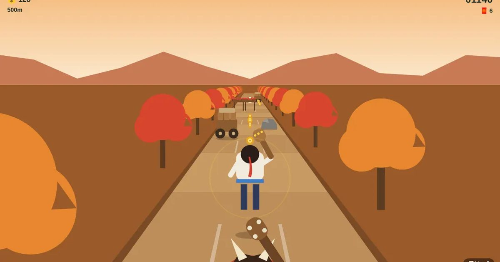

도깨비 산길 질주
Goblin Mountain Dash
달리기 · 스와이프무료설치 없음폰 · PC
▶ 지금 바로 하기로그인 없이 브라우저에서 바로 시작돼요
어떤 게임인가요?
도깨비 방망이를 들고 달아나요! 세 갈래 산길을 쓸어서 바꾸고, 바위는 뛰어넘고, 나뭇가지 아래는 미끄러져 지나가세요. 작은 돌에 걸려 넘어지면 도깨비가 바짝 따라붙어요. 대나무 숲에서 달밤 기와마을까지, 갈수록 빨라져요.
목표 · 도깨비에게 잡히지 않고 최대한 멀리 달리기.
이렇게도 찾아요
달리기 게임러닝 게임도깨비 게임산길 달리기무한 달리기스와이프 게임endless runnerrunning gameswipe runnerkorean runner
#달리기게임 #러닝게임 #도깨비 #틈새오락실
게임 방법
- 왼쪽 · 오른쪽으로 쓸면 길을 바꿔요 (← → · A D)
- 위로 쓸거나 짧게 누르면 점프 (↑ · W · 스페이스)
- 아래로 쓸면 미끄러지기 (↓ · S)
- 작은 돌에 걸리면 도깨비가 다가와요 · 곧바로 또 걸리면 잡혀요
- 끊긴 길과 통나무는 점프, 굴러오는 바위는 옆 길로, 흔들다리는 다리가 있는 길로만
- 달린 거리 + 동전 × 5점
공략 팁
- 바위 · 개울은 위로 쓸어 점프, 나뭇가지는 아래로 쓸어 미끄러지기
- 작은 돌에 한 번 걸리면 도깨비가 따라붙어요 · 8초 동안 조심
- 복주머니는 동전을 끌어오고 부적은 한 번 막아 줘요
- 빨라질수록 조금 일찍 쓸어 주세요
 글 타자 · 타자 빨리 치기
글 타자 · 타자 빨리 치기 한방 벽돌깨기
한방 벽돌깨기 별빛 편대
별빛 편대 오목
오목 왕머리 축구
왕머리 축구 탑 쌓기
탑 쌓기